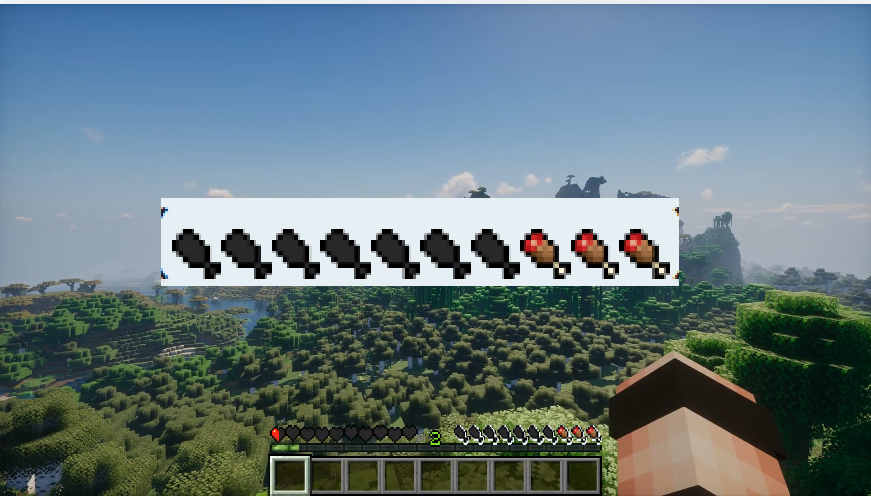
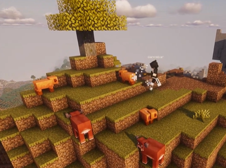
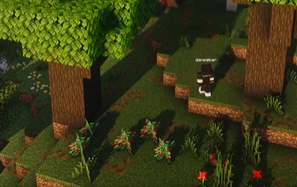
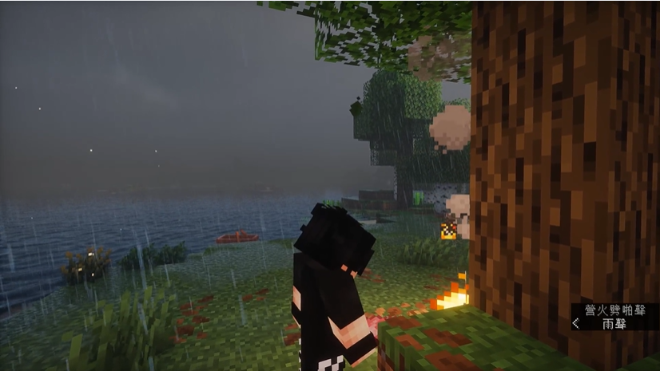
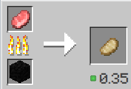
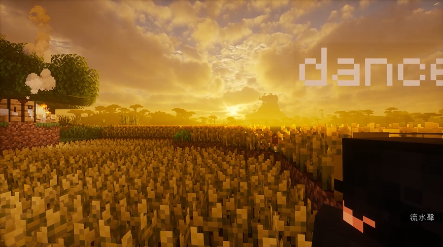
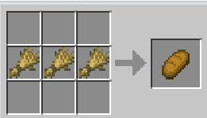
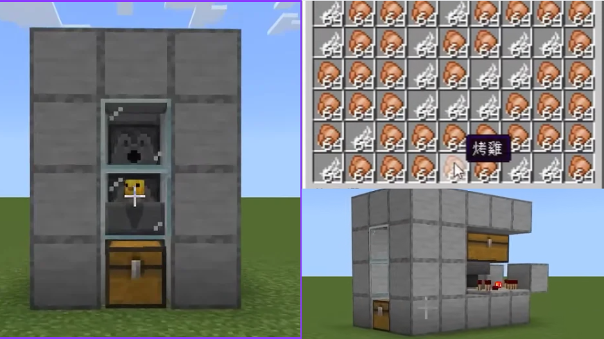

前言
當飢餓值開始下降，文明也開始被推動
剛進入 Minecraft 的世界時，玩家沒有工具、沒有房子，也沒有任何穩定的食物來源。畫面裡那條慢慢下降的飢餓值，看起來只是遊戲介面的一部分，卻很像人類早期面對自然環境時最直接的問題：要活下去，第一件事就是取得食物。

從這個角度看，Minecraft 不只是方塊世界的冒險遊戲，也像一個簡化版的人類文明模擬器。玩家的每一次採集、狩獵、耕種與自動化，都對應著人類食物獲取方式的演變。
報告影片
先看完整影片，再閱讀文章解析
第一階段
狩獵與採集：在生存邊緣摸索
在人類尚未發展出農業以前，食物主要來自採集與狩獵。玩家在 Minecraft 裡摘甜莓、尋找動物、追逐豬隻的過程，就像早期人類必須不斷移動，依靠環境中偶然出現的資源維生。
這種方式最大的問題是不穩定。甜莓能立刻補充飢餓值，但效率低；狩獵能取得肉類，卻需要花時間尋找動物，也可能因為工具不足而失敗。食物不是被規劃出來的，而是被「遇見」的。


真正的轉折出現在「火」的使用。玩家把生豬肉放上營火或熔爐，得到烤豬肉，不只是換了一種食物圖示，也代表食物處理能力的提升。熟食能恢復更多飢餓值，也更適合儲備。火讓食物從單純的自然產物，變成可以被加工、保存與分配的資源。


從「找到什麼就吃什麼」到「把食物加工後再吃」，人類開始把生存從偶然推向可控制。
第二階段
農業革命：把食物變成可預測的週期
當玩家開始開墾土地、挖水渠、種下小麥種子，遊戲裡的生存節奏就改變了。食物不再只是到處尋找的結果，而是可以被安排、等待與收穫的成果。這正是農業革命最重要的意義：人類學會把自然資源轉化為可預測的生產系統。
小麥從種子長成金黃色的麥田，需要水、光照與時間。這個過程比狩獵慢，卻讓食物來源變得穩定。當小麥被做成麵包，玩家不只得到食物，也得到一種能夠支撐定居生活的秩序。


在遊戲中，麵包看似只是三個小麥的合成結果，但它背後其實是一整套分工：玩家要清理土地、維持水源、等待作物成熟，還要把收成轉化為食物。這種穩定性使人不必每天都為下一餐奔波，也讓更多時間能投入工具、建築、探索與其他技術發展。
因此，農業不只是食物獲取方式的改變，更是一種文明結構的起點。當糧食能被大量生產與保存，人類社會才有機會發展出更複雜的聚落、職業與制度。
第三階段
工業化與流水線：工程師的食物系統
進入後期，玩家已經不滿足於自己播種、收割、烹煮。當紅石、漏斗、發射器與收集箱組合起來，食物生產開始變成一套自動運作的系統。這就像現代食品工業：重點不再只是「取得食物」，而是追求效率、穩定與規模。
全自動烤雞機可以被看成一個 Minecraft 版的黑盒子。玩家把雞放進系統，機器透過紅石訊號、發射器與漏斗，不斷完成孵化、處理、收集等流程。最後輸出的不只是烤雞，而是一整套被工程化的食物供應鏈。

早期生存
玩家親自採集、狩獵、烹煮。每一份食物都需要直接勞動。
工業化生產
玩家設計系統，讓機器持續輸出食物。勞動從「操作」轉向「管理」。
這個階段也帶出另一個問題：當食物越來越像商品與數據，我們與食物之間的距離也變遠了。玩家可能不再看見雞的生長，只看見箱子裡累積的烤雞；現代人也常在超市、外送平台與加工食品之間取得食物，卻很少看見背後的農場、工廠與運輸系統。
結語
從飢餓到自動化，食物推動文明前進
Minecraft 的生存流程看似簡單，卻把人類食物獲取進程濃縮成一條清楚的路線：採集與狩獵讓人活下來，農業讓人能夠定居，工業化則把食物變成大規模、可計算、可管理的供應系統。
玩家在方塊世界裡追求的不是高深理論，而是最基本的生存；但正因為生存如此基本，食物才會成為文明發展的起點。從一顆甜莓、一塊烤豬肉、一片麵包，到一台全自動烤雞機，這不只是遊戲進程的演化，也是人類文明史的一種有趣縮影。